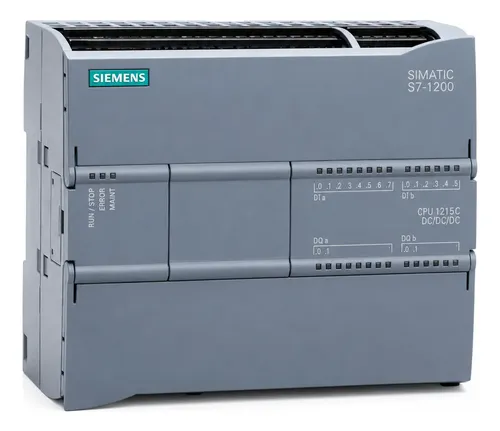
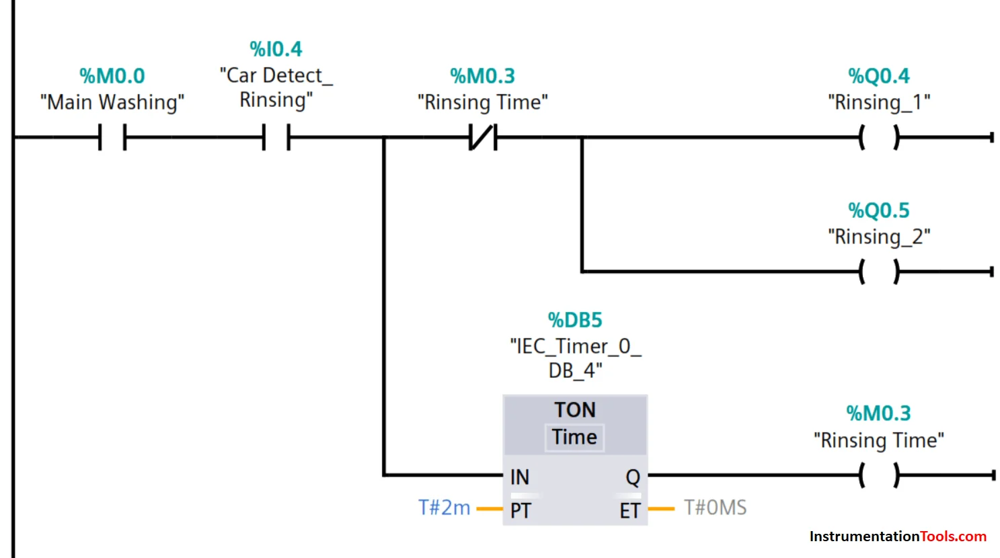
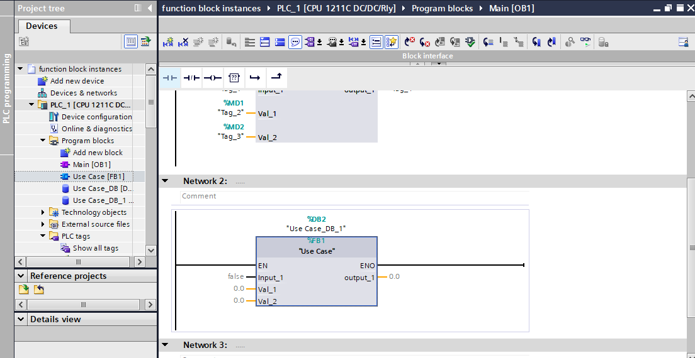
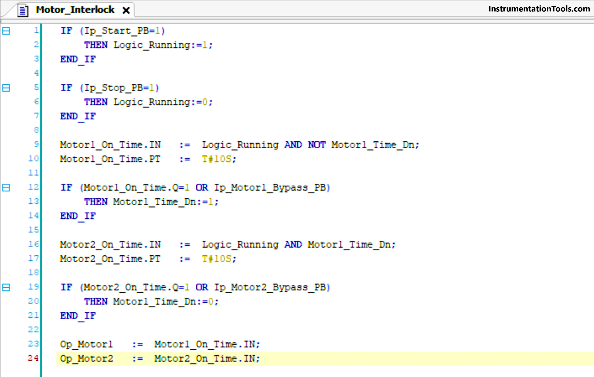
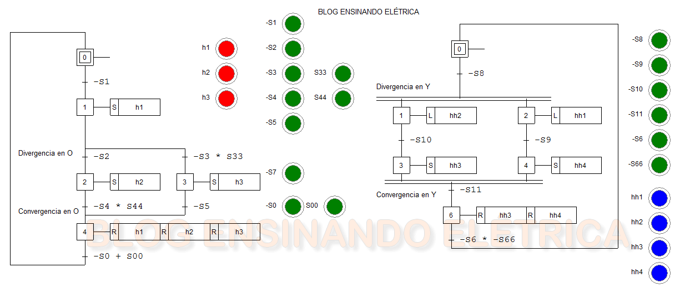

Controladores Lógicos Programáveis
Introdução ao CLP
O Controlador Lógico Programável (CLP), internacionalmente conhecido como PLC (Programmable Logic Controller), é um computador de estado sólido, industrialmente enrijecido, projetado especificamente para o controle de processos de manufatura, máquinas e linhas de montagem. Criado no final da década de 1960 para a indústria automotiva (destaque para o projeto da Bedford Associates para a General Motors), o CLP revolucionou a automação ao substituir os complexos e inflexíveis painéis de relés eletromecânicos.

Fonte: mercadolivreO Ciclo de Varredura (Scan Cycle)
O funcionamento de um CLP é cíclico e contínuo:
- Leitura das Entradas: Verifica o status de sensores e botões.
- Processamento do Programa: Analisa as lógicas elaboradas pelo programador.
- Atualização das Saídas: Aciona motores, válvulas ou lâmpadas, reiniciando o ciclo em poucos milissegundos.
CLP vs. Lógica a Relés
Embora os relés ainda sejam amplamente utilizados para manobra de potência e interfaces de segurança, a lógica de controle principal migrou quase que totalmente para os CLPs. O quadro abaixo destaca os motivos dessa transição:
| Característica | Lógica a Relés Convencional | Controlador Lógico Programável (CLP) |
|---|---|---|
| Flexibilidade | Baixa. Mudar a lógica exige refazer a fiação física (re-cabeamento). | Alta. Mudanças na lógica são feitas inteiramente por software. |
| Espaço Físico | Ocupa grandes quadros, dependendo da complexidade do sistema. | Altamente compacto; milhares de lógicas cabem em um único chip. |
| Manutenção | Difícil localização de falhas devido ao emaranhado de fios e contatos oxidados. | Diagnóstico facilitado por software de monitoramento em tempo real. |
| Conectividade | Inexistente. Equipamentos funcionam de forma isolada. | Ampla. Integração em redes industriais, enviando dados para sistemas supervisórios (SCADA). |
Arquitetura e Componentes de Hardware
Estruturalmente, um CLP é composto por blocos funcionais modulares ou integrados, desenvolvidos para suportar os rigores do chão de fábrica, como vibração, poeira, ruído eletromagnético e altas temperaturas.
Blocos do CLP: Fonte de Alimentação → Unidade Central (CPU, com memória e processador) → Módulo de Entradas e Módulo de Saídas
1. Fonte de Alimentação e CPU
- Fonte: Converte a tensão da rede (ex.: 220 V AC) para os níveis exigidos pela eletrônica interna (frequentemente 24 V DC).
- CPU (Unidade Central de Processamento): Microprocessador que abriga o sistema operacional do CLP e o programa do usuário, armazenados em memórias não voláteis (ROM/Flash) e voláteis (RAM).
2. Módulos de Entrada (Inputs)
São as "portas sensoriais" do sistema:
- Digitais: Interpretam apenas sinais de LIGADO/DESLIGADO, vindos de botões, chaves fim de curso e sensores indutivos.
- Analógicas: Interpretam sinais variáveis em tensão ou corrente, como 0 a 10 V ou 4 a 20 mA, vindos de termopares e transdutores de pressão.
3. Módulos de Saída (Outputs)
Traduzem a lógica da CPU em ações no mundo físico:
- Saídas a Relé: Versáteis (suportam AC ou DC), mas mecanicamente mais lentas.
- Saídas a Transistor: Rápidas e de alta durabilidade (ideais para motores de passo e PWM), porém limitadas a corrente contínua.
- Saídas Analógicas: Controle de atuadores proporcionais, como válvulas servopneumáticas.
Linguagens de Programação (Norma IEC 61131-3)
Para uniformizar a programação entre diversos fabricantes mundiais (Siemens, Rockwell, Schneider, etc.), a norma internacional IEC 61131-3 padroniza as linguagens de programação dos CLPs. As principais são:
Diagrama Ladder (LD)
A mais popular de todas. Baseia-se graficamente na velha lógica de contatos elétricos a relé, facilitando muito o aprendizado e a manutenção por técnicos eletricistas habituados a ler esquemas elétricos.

Fonte: instrumentationtoolsBloco de Funções (FBD)
Linguagem gráfica que utiliza blocos pré-programados (como portas lógicas AND/OR, temporizadores e PID). Excelente para programação modular e interligação de processos complexos.

Fonte: allpcbTexto Estruturado (ST)
Linguagem textual de alto nível, semelhante ao Pascal ou C. É ideal para executar cálculos matemáticos densos, manipulação de strings de dados e implementação de algoritmos avançados.

Fonte: theautomationblogGrafcet / SFC
Sequential Function Chart é uma ferramenta gráfica excelente para descrever processos sequenciais puros. Divide o funcionamento da máquina em passos (estados) e transições condicionais.

Fonte: ensinandoeletricaA quinta linguagem da norma é a Lista de Instruções (IL), textual e de baixo nível, que foi marcada como obsoleta nas edições mais recentes da IEC 61131-3.
O CLP na Bancada Processo
A Bancada de Processos SMART 4.0 é controlada por um CLP Siemens S7-1200, instalado no painel elétrico (item 7). Ele executa a lógica em Ladder/SCL (a SCL é a implementação da Siemens para o Texto Estruturado), lê as entradas (%I) e aciona as saídas (%Q). A configuração das entradas é feita no TIA Portal e a alimentação do comando é de 24 Vcc, fornecida pela fonte chaveada do painel.
As entradas digitais da bancada são:
| Descrição | Canal do CLP | Endereço no Software |
|---|---|---|
| Emergência | Ia1 | %I0.1 |
| Eixo Z Avançado | Ia2 | %I0.2 |
| Eixo Z Recuado | Ia3 | %I0.3 |
| Vacuostato Manipulador | Ia4 | %I0.4 |
| Vacuostato Base de Gravação | Ia5 | %I0.5 |
| Comutador 2 Posições | Ia6 | %I0.6 |
| Botão Start | Ia7 | %I0.7 |
| Botão Stop | Ib0 | %I1.0 |
Os sensores Reed Switch do Eixo Z entram em %I0.2 e %I0.3. O CLP também se conecta à rede da bancada pelo switch Ethernet de 5 portas. Na Pirâmide de Automação, ele está no Nível 2 (Controle).
O Papel do CLP na Indústria 4.0
A transformação digital da manufatura elevou o CLP a um novo patamar. Hoje, além de controlar a máquina, o CLP atua como um concentrador de dados (edge computing). Equipados com portas Ethernet industriais (PROFINET, EtherNet/IP) e protocolos de TI (como MQTT e OPC UA), os CLPs modernos conectam o chão de fábrica diretamente à nuvem, permitindo manutenção preditiva, análise de Big Data e integração direta com os sistemas ERP da empresa.
Conclusão
Apesar do avanço dos computadores industriais (IPCs) e sistemas embarcados, a confiabilidade extrema, a modularidade e o suporte de longo prazo garantem que o CLP continuará sendo a espinha dorsal incontestável da automação industrial por muitas décadas.